Code
library(dplyr)
library(tidyr)
library(ggplot2)
library(purrr)
library(tibble)
library(readr)
library(rlang)
library(here)
library(xronos)
library(rcarbon)Supplements 1–3 examined the problem in simulations. Here we turn to an empirical dataset, Danish Neolithic settlement records.
The aim is methodological, and we make no claim about the Danish Neolithic itself. The question is:
How strongly does an empirical aoristic reconstruction depend on the chronological structure of the dating intervals, and how does phase correction change the resulting temporal pattern?
The true generating process for these data is unknown, so there is no ground truth to test the methods against. We therefore compare the following six elements:
In particular, we ask whether peaks, troughs and trends of the reconstruction follow the structure of the chronological classification.
The radiocarbon dates are no ground truth. They cover only part of the sites, have their own taphonomic, research-historical and sampling biases, and summed probability distributions (SPDs) are a problematic summary of them. Their biases, however, differ from those of the phase system, so agreement with an SPD is informative about the mechanism examined here.
The Baorista fits for the four priors are computed with scripts/run_s4_baorista_sensitivity.sh (make refresh-s4-baorista), and this document reads their posterior summaries from outputs/. The XRONOS data are read from data/. The full reproduction workflow is described in the README.
library(dplyr)
library(tidyr)
library(ggplot2)
library(purrr)
library(tibble)
library(readr)
library(rlang)
library(here)
library(xronos)
library(rcarbon)set.seed(42)
options(knitr.kable.NA = "–")
dir.create("outputs", showWarnings = FALSE, recursive = TRUE)
dir.create("figures", showWarnings = FALSE, recursive = TRUE)
dir.create(here("data"), showWarnings = FALSE, recursive = TRUE)
source("R/aoristic_helpers.R")
input_file <- "../data/anlaeg_settlements.csv"
from_col <- "fra_aar"
to_col <- "til_aar"
time_min <- -4100L
time_max <- -1800L
plot_time_min <- -3800L
plot_time_max <- time_max
year_grid <- seq(time_min, time_max - 1, by = 1)
bin_width <- 50L
n_mc <- 100L
inclusive_end_fix <- TRUE
harmonise_free_entries <- Sys.getenv("HARMONISE_FREE_ENTRIES", "true") == "true"
ff_period_grid <- c(
-5400L, -4800L, -4300L, -3950L, -3700L, -3500L, -3300L, -3200L, -3100L,
-3000L, -2900L, -2800L, -2600L, -2450L, -2350L, -1950L, -1700L
)
max_interval_width <- Inf
refresh_xronos <- Sys.getenv("REFRESH_XRONOS", "false") == "true"
xronos_site_type_filter <- "settlement"
xronos_raw_file <- here("data", "xronos_denmark_raw.csv")
xronos_dedup_file <- here("data", "xronos_denmark_c14_dedup.csv")
xronos_report_file <- here("data", "xronos_denmark_dedup_report.csv")
xronos_spd_file <- here("data", "xronos_denmark_sumcal.csv")
xronos_cal_file <- here("data", "xronos_denmark_calibrated.rds")
xronos_spd_rds_file <- here("data", "xronos_denmark_spd.rds")
baorista_rates <- c(1, 10, 50, 100)
baorista_reference_rate <- 1
baorista_file <- function(rate, suffix) {
file.path("outputs",
paste0("s4_danish_neolithic_baorista_rate_", rate, "_", suffix))
}
baorista_curve_files <- setNames(
vapply(baorista_rates, baorista_file, suffix = "curve_binned.csv",
FUN.VALUE = character(1)),
baorista_rates
)
baorista_posterior_files <- setNames(
vapply(baorista_rates, baorista_file, suffix = "posterior_binned.csv",
FUN.VALUE = character(1)),
baorista_rates
)
baorista_diagnostics_files <- setNames(
vapply(baorista_rates, baorista_file, suffix = "diagnostics.csv",
FUN.VALUE = character(1)),
baorista_rates
)
reference_key <- as.character(baorista_reference_rate)
baorista_curve_file <- baorista_curve_files[[reference_key]]
baorista_posterior_file <- baorista_posterior_files[[reference_key]]
baorista_diagnostics_file <- baorista_diagnostics_files[[reference_key]]
xronos_time_range_bp <- c(6500, 2500)
method_colours <- c("Standard aoristic" = "#D55E00",
"Monte Carlo mean" = "#0072B2",
"Phase-corrected" = "#009E73",
"Baorista posterior median" = "#CC79A7")
method_linetypes <- c("Standard aoristic" = "solid",
"Monte Carlo mean" = "longdash",
"Phase-corrected" = "solid",
"Baorista posterior median" = "dotdash")This supplement uses an empirical dataset of Danish Neolithic settlements. The data derive from the Danish national register of sites and monuments, Fund og Fortidsminder (Slots- og Kulturstyrelsen, 2018, data downloaded 5 April 2018). The full export (data/anlaeg_all.csv) is reduced to Neolithic settlement records by scripts/prepare_s4_danish_settlements.R, which writes data/anlaeg_settlements.csv, the input of this supplement. For each observation, a beginning and an end date are given. Dates before the common era are represented by negative values.
if (!file.exists(input_file)) stop("Run scripts/prepare_s4_danish_settlements.R first.")
raw_data <- read_csv(input_file, show_col_types = FALSE)The dating intervals are taken from fra_aar (from) and til_aar (to) and treated as half-open, \([from, to)\), as in the simulations. Since the source records most end dates inclusively (an interval ending at -2801 includes 2801 BCE, the next phase starts at -2800), end dates ending in 1 are shifted by one year. Otherwise every phase boundary would leave a one-year gap in the overlap count.
The analytical window runs from 4100 to 1800 BCE. Observations whose dating intervals overlap it are kept and clipped to it, a compromise for the methodological purpose of this supplement. All filtering, reconstruction, normalisation, and numerical diagnostics use this full window. The only exception is the comparison with the radiocarbon record, which is restricted to the common Neolithic window explained there. Some plots use a narrower display window beginning at 3800 BCE, to keep the low-density edge of the curves from dominating the figure, which affects presentation only.
The Neolithic settlement records were already selected when the input file was prepared (see above), so no further records are removed here. Two steps prepare the dating intervals.
First, free entries are harmonised. Most dates in Fund og Fortidsminder are chosen from the register’s period list, which records end years inclusively (e.g. -2801) and allows a record to be dated from one period to another. A few records were instead dated freely, for example by a radiocarbon range such as -3369 to -3097. Such ad hoc intervals do not belong to the classification system but would still enter the overlap count \(\lambda(t)\). Each of them is therefore assigned to the period of the list, i.e. the combination of two boundaries of the period grid, with which it overlaps most (intersection over union). The assignment is written to outputs/s4_danish_neolithic_harmonisation_mapping.csv, and setting HARMONISE_FREE_ENTRIES=false restores the original intervals.
is_list_entry <- function(end) abs(end) %% 50L == 1L
interval_overlap_ratio <- function(s1, e1, s2, e2) {
pmax(0, pmin(e1, e2) - pmax(s1, s2)) / (pmax(e1, e2) - pmin(s1, s2))
}
grid_periods <- expand_grid(grid_start = ff_period_grid,
grid_end = ff_period_grid) |>
filter(grid_end > grid_start)
best_grid_period <- function(start, end) {
ratio <- interval_overlap_ratio(
start, end, grid_periods$grid_start, grid_periods$grid_end
)
k <- which.max(ratio)
tibble(grid_start = grid_periods$grid_start[k],
grid_end = grid_periods$grid_end[k], overlap = ratio[k])
}
raw_dates <- raw_data |>
mutate(raw_start = as.integer(.data[[from_col]]),
raw_end = as.integer(.data[[to_col]]),
list_entry = is_list_entry(raw_end))
free_entries <- raw_dates |>
filter(!list_entry, is.finite(raw_start), is.finite(raw_end),
raw_end > raw_start) |>
count(raw_start, raw_end, name = "n")
harmonisation_mapping <- bind_cols(
free_entries,
map2_dfr(free_entries$raw_start, free_entries$raw_end, best_grid_period)
)
write_csv(harmonisation_mapping,
"outputs/s4_danish_neolithic_harmonisation_mapping.csv")
harmonised_data <- raw_dates |>
left_join(
harmonisation_mapping |> select(raw_start, raw_end, grid_start, grid_end),
by = c("raw_start", "raw_end")
) |>
mutate(harmonised = harmonise_free_entries & !list_entry & !is.na(grid_start),
!!from_col := if_else(harmonised, grid_start, raw_start),
!!to_col := if_else(harmonised, grid_end - 1L, raw_end))Second, the dating intervals are clipped to the analytical time window. The number of retained observations and of harmonised records is given in the data summary below.
danish_events <- harmonised_data |>
mutate(
start = as.integer(.data[[from_col]]),
end = as.integer(.data[[to_col]]),
end = if_else(inclusive_end_fix & (abs(end) %% 10L == 1L), end + 1L, end)
) |>
filter(is.finite(start), is.finite(end), end > start, end > time_min,
start < time_max) |>
mutate(start = pmax(start, time_min), end = pmin(end, time_max),
interval_width = end - start) |>
filter(end > start, interval_width <= max_interval_width)
if (nrow(danish_events) == 0) {
stop("No valid intervals remain after clipping to the analysis window.")
}
write_csv(danish_events, "outputs/s4_danish_neolithic_prepared_events.csv")Dating precision varies by a factor of 22 within this catalogue. The narrowest intervals cover 100 years, the widest 2,150, and the median sits at 1,150. Across the retained observations there are 63 distinct intervals in total.
A 100-year interval and a 2,150-year interval enter the sum with the same total weight. The shape of the reconstruction therefore depends on how many intervals of each width happen to exist, and not only on how many sites do.
data_summary <- tibble(
metric = c("Number of records in raw data",
"Number of records after filtering",
"Number of records with harmonised free entries",
"Share of raw records retained", "Earliest retained start",
"Latest retained end", "Median interval width",
"Minimum interval width", "Maximum interval width",
"Number of unique retained intervals"),
value = c(nrow(raw_data), nrow(danish_events), sum(danish_events$harmonised),
round(nrow(danish_events) / nrow(raw_data), 3),
min(danish_events$start, na.rm = TRUE),
max(danish_events$end, na.rm = TRUE),
median(danish_events$interval_width, na.rm = TRUE),
min(danish_events$interval_width, na.rm = TRUE),
max(danish_events$interval_width, na.rm = TRUE),
n_distinct(paste(danish_events$start, danish_events$end)))
)
write_csv(data_summary, "outputs/s4_danish_neolithic_data_summary.csv")
data_summary |>
filter(metric != "Share of raw records retained") |>
mutate(value = format(value, big.mark = ",", trim = TRUE, scientific = FALSE)) |>
kbl( col.names = c("", "Value"), align = "lr")| Value | |
|---|---|
| Number of records in raw data | 3,493 |
| Number of records after filtering | 3,493 |
| Number of records with harmonised free entries | 43 |
| Earliest retained start | -4,100 |
| Latest retained end | -1,800 |
| Median interval width | 1,150 |
| Minimum interval width | 100 |
| Maximum interval width | 2,150 |
| Number of unique retained intervals | 63 |
We begin with the structure of the chronological intervals before turning to the reconstructed curves.
empirical_intervals <- danish_events |>
distinct(start, end) |>
arrange(start, end) |>
mutate(interval_id = row_number(), width = end - start)The distribution of intervals is very uneven, and a handful of wide to medium-wide ranges dominates. 3950–1800 BCE carries 1,271 observations and 3950–2800 BCE a further 734. Between them, these two labels account for 57.4% of the dataset.
interval_counts <- danish_events |>
count(start, end, interval_width, name = "n") |>
arrange(desc(n), start, end)
write_csv(interval_counts, "outputs/s4_danish_neolithic_interval_counts.csv")
interval_concentration <- interval_counts |>
arrange(desc(n)) |>
mutate(rank = row_number(), share = n / sum(n),
cumulative_share = cumsum(share))
write_csv(interval_concentration,
"outputs/s4_danish_neolithic_interval_concentration.csv")
interval_concentration |>
slice_head(n = 10) |>
transmute(Rank = rank, `Interval (BCE)` = paste0(abs(start), "–", abs(end)),
`Width (years)` = interval_width, Records = n,
`Share (%)` = round(100 * share, 1),
`Cumulative (%)` = round(100 * cumulative_share, 1)) |>
kbl()| Rank | Interval (BCE) | Width (years) | Records | Share (%) | Cumulative (%) |
|---|---|---|---|---|---|
| 1 | 3950–1800 | 2150 | 1271 | 36.4 | 36.4 |
| 2 | 3950–2800 | 1150 | 734 | 21.0 | 57.4 |
| 3 | 2350–1800 | 550 | 404 | 11.6 | 69.0 |
| 4 | 3950–3300 | 650 | 237 | 6.8 | 75.8 |
| 5 | 3300–2800 | 500 | 188 | 5.4 | 81.1 |
| 6 | 2800–2350 | 450 | 125 | 3.6 | 84.7 |
| 7 | 3300–2600 | 700 | 58 | 1.7 | 86.4 |
| 8 | 2350–1950 | 400 | 48 | 1.4 | 87.7 |
| 9 | 2900–2600 | 300 | 45 | 1.3 | 89.0 |
| 10 | 3000–2800 | 200 | 38 | 1.1 | 90.1 |
p_interval_widths <- ggplot(danish_events, aes(x = interval_width)) +
geom_histogram(bins = 30) +
labs(title = "Dating precision in the Danish Neolithic dataset",
subtitle = "Distribution of chronological interval widths",
x = "Interval width in years", y = "Number of observations") +
plot_theme(base_size = 9)
p_interval_widths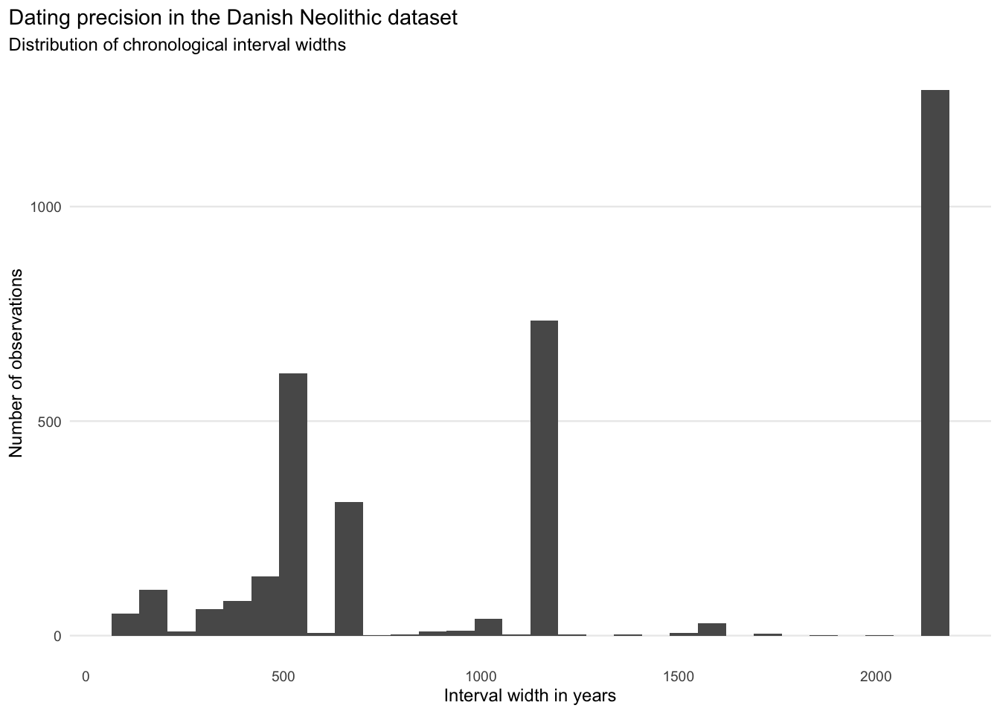
p_interval_concentration <- interval_concentration |>
mutate(interval_label = paste0(start, " to ", end),
interval_label = reorder(interval_label, n)) |>
slice_max(n, n = min(25, nrow(interval_concentration))) |>
ggplot(aes(x = n, y = interval_label)) +
geom_col() +
labs(title = "Most frequent chronological intervals in the Danish Neolithic dataset",
subtitle = "Top empirical interval labels by number of observations",
x = "Number of observations", y = NULL) +
plot_theme(base_size = 8)
p_interval_concentration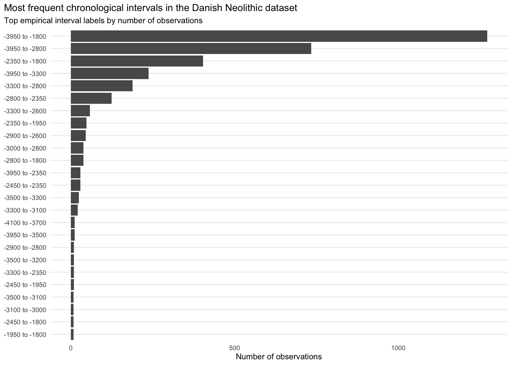
As in the simulations, the data are an uneven mixture of broad and narrow intervals, and the resulting curve may reflect past activity, the structure of the chronological attribution, or both.
For each year we count the distinct intervals covering it.
overlap_curve <- count_phase_overlap(
phase_catalogue = empirical_intervals |>
transmute(from = start, to = end),
year_grid = year_grid
)
overlap_curve_binned <- bin_overlap_curve(
overlap_curve = overlap_curve, bin_width = bin_width, bin_start = time_min
)p_overlap <- ggplot(overlap_curve_binned, aes(x = year, y = overlap)) +
geom_line(linewidth = 0.8) +
geom_point(size = 1.2) +
coord_cartesian(xlim = c(plot_time_min, plot_time_max)) +
labs(
title = "Empirical overlap structure of Danish Neolithic dating intervals",
subtitle = "Number of unique chronological intervals covering each time bin",
x = "Year BCE/CE",
y = "Mean number of overlapping intervals"
) +
plot_theme(base_size = 9)
p_overlap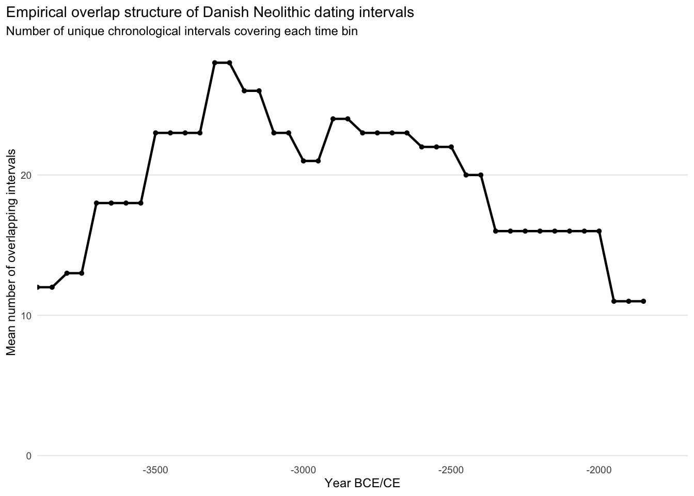
The curve describes only the classification system, that is, how many distinct intervals cover a given time, and says nothing about the number of sites. As shown in the previous supplements, where an empirical reconstruction tracks the overlap curve, part of the reconstructed trajectory may derive from the chronological classification instead from past activity.
The standard aoristic method distributes each observation uniformly across its assigned chronological interval.
standard_curve <- run_standard_aoristic(intervals = danish_events,
year_grid = year_grid)
standard_curve_binned <- standard_curve |>
make_reconstruction_binned(value_col = standard, output_col = "standard",
bin_width = bin_width, bin_start = time_min)For the Danish Neolithic settlement data this produces a rather flat curve with some internal structure and a pronounced shift after 2800 BCE. Many observations carry very wide dating intervals, so a substantial share of the evidence is smeared across long stretches of time. The curve records the distribution of datings as much as the number of observations.
p_standard <- ggplot(standard_curve_binned, aes(x = year, y = standard)) +
geom_line(colour = method_colours[["Standard aoristic"]], linewidth = 0.8,
na.rm = TRUE) +
labs(title = "Standard proportional aoristic reconstruction from the Danish Neolithic dataset",
subtitle = "Binned and normalised to sum to one", x = "Year BCE/CE",
y = "Normalised intensity") +
plot_theme(base_size = 9) +
coord_cartesian(xlim = c(plot_time_min, plot_time_max))
p_standard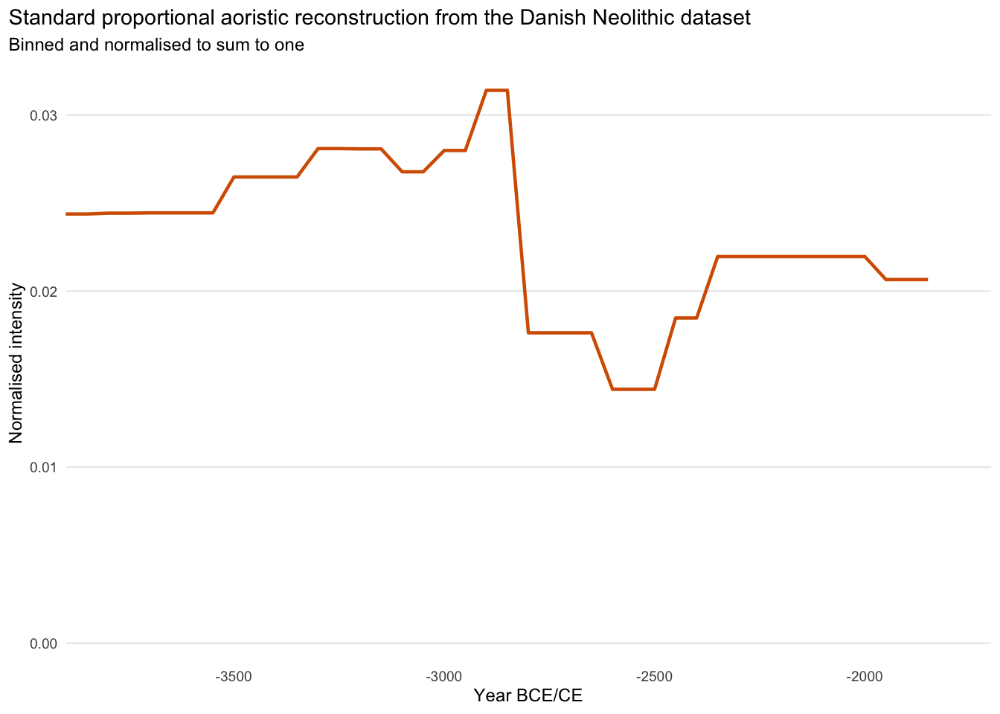
As in Supplement 2, the Monte Carlo reconstruction repeatedly samples one possible date for each observation from its assigned interval. It expresses uncertainty under the standard within-interval uniformity assumption.
mc_curve_binned <- run_monte_carlo_aoristic(
intervals = danish_events,
year_grid = year_grid,
bin_width = bin_width,
bin_start = time_min,
n_iter = n_mc,
seed = 42001
)Setting the uncertainty envelope aside, the Monte Carlo reconstruction is nearly identical to the simple proportional one, as the simulations led us to expect.
p_mc <- ggplot(mc_curve_binned, aes(x = year)) +
geom_ribbon(aes(ymin = mc_q05, ymax = mc_q95), alpha = 0.20, na.rm = TRUE) +
geom_line(aes(y = mc_mean), colour = method_colours[["Monte Carlo mean"]],
linewidth = 0.8, na.rm = TRUE) +
labs(
title = "Monte Carlo aoristic uncertainty for the Danish Neolithic dataset",
subtitle = paste0("Ribbon: 5th to 95th percentile interval across ", n_mc, " iterations"),
x = "Year BCE/CE",
y = "Normalised intensity"
) +
plot_theme(base_size = 9) +
coord_cartesian(xlim = c(plot_time_min, plot_time_max))
p_mc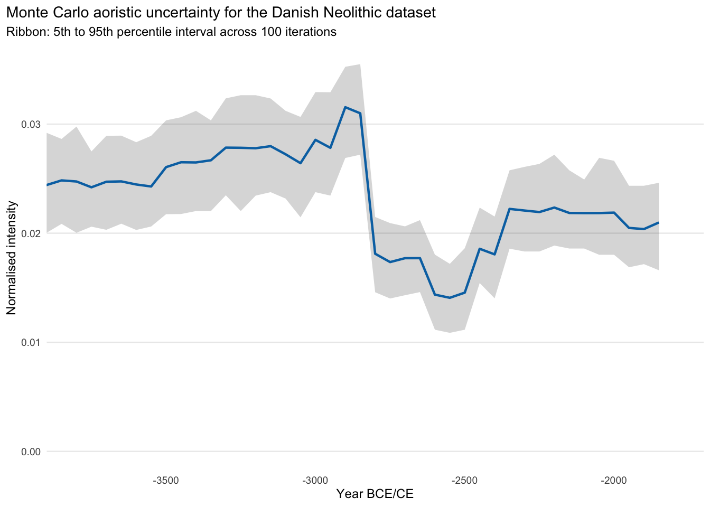
The phase-corrected method reduces the weight assigned to years covered by many overlapping chronological intervals.
phase_corrected_curve <- run_phase_corrected_aoristic(
intervals = danish_events, year_grid = year_grid
)
phase_corrected_curve_binned <- phase_corrected_curve |>
make_reconstruction_binned(value_col = phase_corrected,
output_col = "phase_corrected",
bin_width = bin_width, bin_start = time_min)The phase-corrected curve departs substantially from the others. It correlates with the standard aoristic curve at 0.786, so the two are related, but considerable probability is moved between periods. Where the two differ, the interpretation depends on the method.
p_phase_corrected <- phase_corrected_curve_binned |>
inner_join(standard_curve_binned, by = "year") |>
ggplot(aes(x = year)) +
geom_line(aes(y = standard), colour = "grey60", linetype = "dashed",
linewidth = 0.6, na.rm = TRUE) +
geom_line(aes(y = phase_corrected),
colour = method_colours[["Phase-corrected"]], linewidth = 0.8,
na.rm = TRUE) +
labs(
title = "Phase-corrected aoristic reconstruction for the Danish Neolithic dataset",
subtitle = "Binned and normalised to sum to one; dashed grey line: standard reconstruction for reference",
x = "Year BCE/CE",
y = "Normalised intensity"
) +
plot_theme(base_size = 9) +
coord_cartesian(xlim = c(plot_time_min, plot_time_max))
p_phase_corrected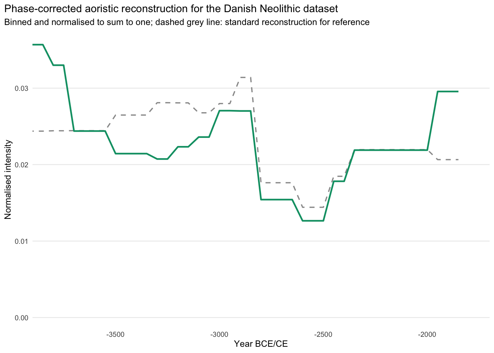
The empirical Baorista reconstruction is evaluated under four exponential priors for the ICAR scale parameter: dexp(rate=1), dexp(rate=10), dexp(rate=50), and dexp(rate=100). All four are fitted to the same 3,493 dated records (63 unique intervals) with the same initial MCMC settings. Fits that do not reach the convergence criterion are refitted with doubled iterations (see the convergence table). This separates features supported by the data from features of the smoothing prior.
The panels below show the posterior mean, since each draw is normalised before summarisation and the mean therefore also sums to one. Ribbons are pointwise 95% credible intervals. The method comparisons further down use the posterior median instead, following the convention of Supplement 3.
if (!all(file.exists(c(baorista_curve_files, baorista_posterior_files,
baorista_diagnostics_files)))) {
stop("Run scripts/run_s4_baorista_sensitivity.sh first.")
}
read_baorista_posterior <- function(rate) {
read_csv(baorista_posterior_files[[as.character(rate)]],
show_col_types = FALSE) |>
mutate(sigma_prior_rate = rate,
sigma_prior = paste0("dexp(rate=", rate, ")"))
}
read_baorista_diagnostics <- function(rate) {
read_csv(baorista_diagnostics_files[[as.character(rate)]],
show_col_types = FALSE) |>
mutate(sigma_prior_rate = rate)
}
baorista_sensitivity_posterior <- map_dfr(
baorista_rates, read_baorista_posterior
)
baorista_sensitivity_diagnostics_long <- map_dfr(
baorista_rates, read_baorista_diagnostics
)
baorista_sensitivity_diagnostics <- baorista_sensitivity_diagnostics_long |>
filter(
diagnostic %in% c("max_rhat", "median_rhat", "min_ess", "median_ess",
"n_posterior_samples", "niter", "n_attempts", "converged")
) |>
mutate(value = as.numeric(value)) |>
select(sigma_prior_rate, diagnostic, value) |>
pivot_wider(names_from = diagnostic, values_from = value) |>
arrange(sigma_prior_rate)
baorista_sensitivity_diagnostics |>
mutate(
sigma_prior_rate = as.character(sigma_prior_rate),
across(any_of(c("max_rhat", "median_rhat")),
~ formatC(.x, format = "f", digits = 3)),
across(
any_of(c("min_ess", "median_ess", "n_posterior_samples", "niter", "n_attempts")),
~ format(round(.x), big.mark = ",", scientific = FALSE, trim = TRUE)
),
across(any_of("converged"), ~ if_else(.x == 1, "yes", "no"))
) |>
select(any_of(c(
"sigma_prior_rate", "max_rhat", "median_rhat", "min_ess", "median_ess",
"n_posterior_samples", "niter", "n_attempts", "converged"
))) |>
rename(any_of(c(`Prior rate` = "sigma_prior_rate", `Max R-hat` = "max_rhat",
`Median R-hat` = "median_rhat", `Min ESS` = "min_ess",
`Median ESS` = "median_ess",
`Draws` = "n_posterior_samples",
Iterations = "niter", Attempts = "n_attempts",
Converged = "converged"))) |>
(\(d) kbl(
d,
align = c("l", rep("r", ncol(d) - 1))))()| Prior rate | Max R-hat | Median R-hat | Min ESS | Median ESS | Draws | Iterations | Attempts | Converged |
|---|---|---|---|---|---|---|---|---|
| 1 | 1.076 | 1.002 | 1,174 | 2,000 | 2,000 | 200,000 | 3 | no |
| 10 | 1.054 | 1.002 | 1,482 | 2,000 | 2,000 | 200,000 | 3 | no |
| 50 | 1.008 | 1.002 | 1,471 | 2,000 | 2,000 | 50,000 | 1 | yes |
| 100 | 1.008 | 1.002 | 1,462 | 2,000 | 2,000 | 50,000 | 1 | yes |
baorista_sensitivity_plot_data <- baorista_sensitivity_posterior |>
filter(year >= plot_time_min, year <= plot_time_max) |>
mutate(
sigma_prior = factor(sigma_prior,
levels = paste0("dexp(rate=", baorista_rates, ")"))
)
p_baorista_sensitivity <- ggplot(baorista_sensitivity_plot_data,
aes(x = year, y = baorista_mean)) +
geom_ribbon(aes(ymin = baorista_q025, ymax = baorista_q975), alpha = 0.18) +
geom_line(linewidth = 0.8) +
facet_wrap(vars(sigma_prior), ncol = 2, scales = "free_y") +
labs(title = "Baorista prior-sensitivity analysis",
subtitle = "Posterior mean and pointwise 95% credible interval",
x = "Year BCE/CE", y = "Posterior probability") +
plot_theme(base_size = 9)
p_baorista_sensitivity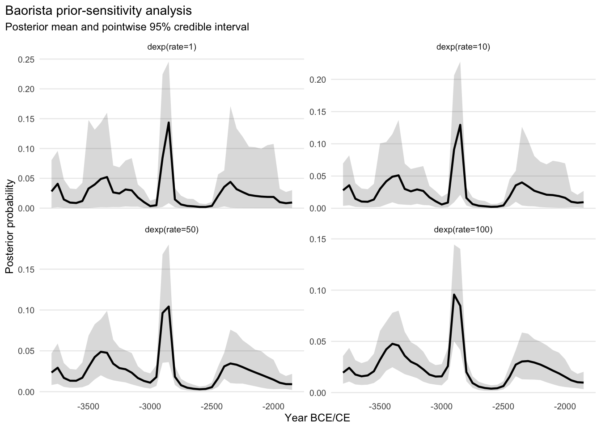
The fits with prior rates 1 and 10 did not reach the convergence criterion after 3 attempts (maximum R-hat 1.08 and 1.05) and are reported but flagged. The peak discussed below appears in all four fits, including the converged ones. The prior affects amplitude and smoothness but leaves the qualitative shape unchanged. As the exponential rate rises, the dominant peak flattens, secondary variation shrinks, and the posterior intervals narrow. Depending on the prior, the maximum of the posterior median falls in the 50-year blocks 2900–2851 BCE and 2850–2801 BCE, i.e. in the century immediately before 2800 BCE. A secondary concentration sits immediately before 3300 BCE, another boundary where frequently repeated ranges end. This is the behaviour expected for interval-censored data. Likelihood-based estimates concentrate probability mass on the intersections of the observed intervals (the Turnbull intervals, Turnbull, 1976), and where many intervals share an end point these intersections sit immediately before it.
Because the peak persists across very different priors, it is not caused by the smoothing prior. This does not mean, however, that it reflects past activity. Robustness to the prior and robustness to the chronological observations are two different properties, and only the first has been tested here. All four models condition on the same empirical interval catalogue, and the peak lies immediately before a major shared boundary at 2800 BCE, where many frequently repeated ranges terminate.
The rate-1 model retains the original Baorista prior and serves as the reference reconstruction in the method comparisons below. It is used only to keep the figures readable.
For the comparison with the aoristic reconstructions, we use the Baorista fit with prior rate 1 as reference. Its central curve is the posterior median, which handles the asymmetry of these posteriors better than the mean. Its 95% credible interval expresses uncertainty conditional only on the Danish interval data, the Baorista model, and the selected prior.
baorista_curve_binned <- read_csv(baorista_curve_file, show_col_types = FALSE)
baorista_posterior_binned <- read_csv(baorista_posterior_file,
show_col_types = FALSE)
baorista_diagnostics <- read_csv(baorista_diagnostics_file,
show_col_types = FALSE)curves_binned <- overlap_curve_binned |>
left_join(standard_curve_binned, by = "year") |>
left_join(
mc_curve_binned |>
select(year, mc_mean, mc_median, mc_q05, mc_q95),
by = "year"
) |>
left_join(phase_corrected_curve_binned, by = "year") |>
left_join(
baorista_posterior_binned |>
select(year, baorista_median, baorista_q025, baorista_q975),
by = "year"
) |>
mutate(overlap = replace_na(overlap, 0),
standard = normalise_curve(replace_na(standard, 0)),
mc_mean = normalise_curve(replace_na(mc_mean, 0)),
mc_median = normalise_curve(replace_na(mc_median, 0)),
phase_corrected = normalise_curve(replace_na(phase_corrected, 0)),
baorista_median = replace_na(baorista_median, 0),
baorista_q025 = replace_na(baorista_q025, 0),
baorista_q975 = replace_na(baorista_q975, 0))
write_csv(curves_binned,
"outputs/s4_danish_neolithic_reconstruction_curves_binned.csv")overlap_diagnostics <- curves_binned |>
select(overlap, standard, mc_mean, phase_corrected, baorista_median) |>
summarise(standard = safe_cor(overlap, standard),
mc_mean = safe_cor(overlap, mc_mean),
phase_corrected = safe_cor(overlap, phase_corrected),
baorista_median = safe_cor(overlap, baorista_median)) |>
pivot_longer(cols = everything(), names_to = "method",
values_to = "overlap_curve_correlation") |>
mutate(
method = recode(method, standard = "Standard aoristic",
mc_mean = "Monte Carlo mean",
phase_corrected = "Phase-corrected",
baorista_median = "Baorista posterior median")
) |>
arrange(desc(abs(overlap_curve_correlation))) |>
mutate(
# overlap-aligned relative amplitude (see Supplement 2)
overlap_relative_amplitude = map_dbl(
method,
~ overlap_relative_amplitude(
curves_binned[[c(
"Standard aoristic" = "standard",
"Monte Carlo mean" = "mc_mean",
"Phase-corrected" = "phase_corrected",
"Baorista posterior median" = "baorista_median"
)[[.x]]]],
curves_binned$overlap
)
)
)
write_csv(overlap_diagnostics,
"outputs/s4_danish_neolithic_overlap_diagnostics.csv")
overlap_diagnostics |>
select(method, overlap_curve_correlation, overlap_relative_amplitude) |>
kbl(
digits = 3,
col.names = c("Method", "Correlation with overlap", "Overlap-aligned relative amplitude")
)| Method | Correlation with overlap | Overlap-aligned relative amplitude |
|---|---|---|
| Standard aoristic | 0.661 | 0.213 |
| Monte Carlo mean | 0.656 | 0.211 |
| Baorista posterior median | 0.319 | 0.477 |
| Phase-corrected | 0.158 | 0.058 |
p_overlap_correlation <- overlap_diagnostics |>
mutate(method = reorder(method, abs(overlap_curve_correlation))) |>
ggplot(aes(x = overlap_curve_correlation, y = method)) +
geom_col() +
geom_vline(xintercept = 0, linewidth = 0.4) +
labs(
title = "Danish Neolithic data: reconstructions and phase overlap",
subtitle = "Correlation between each method and the empirical overlap curve",
x = "Correlation with overlap structure",
y = NULL
) +
plot_theme(base_size = 9)
p_overlap_correlation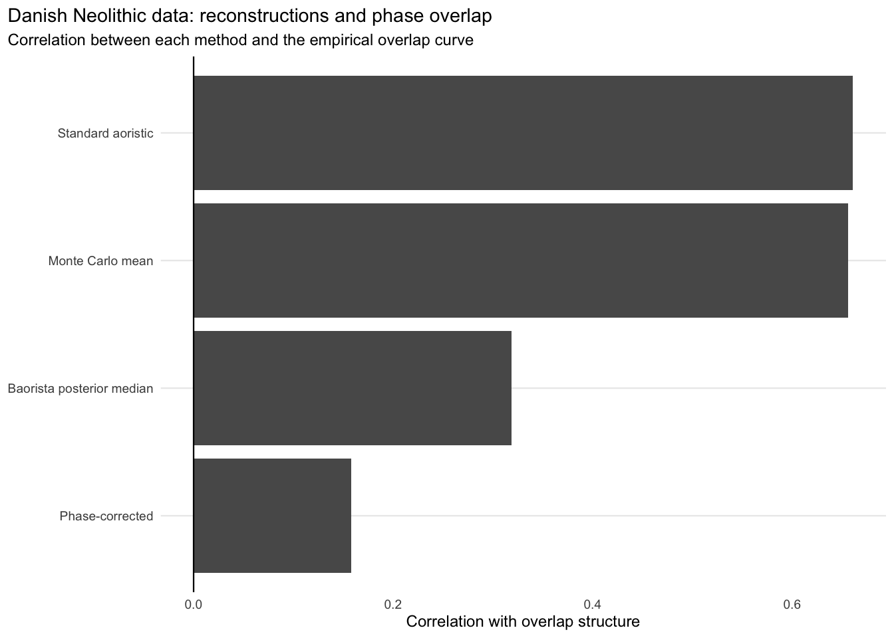
The standard proportional result correlates with the empirical overlap curve at 0.661 and the Monte Carlo result at 0.656. The phase-corrected reconstruction drops to 0.158, with the Baorista posterior median between the two at 0.319. Phase correction reduces the coupling most, by a wide margin.
Baorista’s lower correlation does not imply weaker coupling. A single coefficient summarises the entire binned series, whereas Baorista’s dominant peak is a local feature closely aligned with a major shared interval boundary. Such a local alignment can persist despite a low overall correlation.
# The y axis of the comparison figures is cut at 0.045, so that the Baorista
# peak does not flatten the other curves. The peak value is given in the plot.
y_cut <- 0.045
peak_note <- function(curves) {
peak <- curves |>
filter(method == "Baorista posterior median") |>
slice_max(value, n = 1)
annotate("text", x = peak$year + 40, y = y_cut, hjust = 0, vjust = 1,
size = 2.8, colour = "#CC79A7",
label = paste0("Baorista peak ", formatC(peak$value, format = "f", digits = 2),
" (cut off)"))
}plot_overlap_methods <- curves_binned |>
mutate(overlap_scaled = normalise_curve(overlap)) |>
select(year, Overlap_structure = overlap_scaled, Standard_aoristic = standard,
Monte_Carlo_mean = mc_mean, Phase_corrected = phase_corrected,
Baorista_posterior_median = baorista_median) |>
pivot_longer(cols = -year, names_to = "method", values_to = "value") |>
mutate(
method = recode(method, Overlap_structure = "Overlap structure",
Standard_aoristic = "Standard aoristic",
Monte_Carlo_mean = "Monte Carlo mean",
Phase_corrected = "Phase-corrected",
Baorista_posterior_median = "Baorista posterior median"),
method = factor(
method,
levels = c("Overlap structure", "Standard aoristic", "Monte Carlo mean",
"Phase-corrected", "Baorista posterior median")
)
)
overlap_colours <- c("Overlap structure" = "black",
"Standard aoristic" = "#D55E00",
"Monte Carlo mean" = "#0072B2",
"Phase-corrected" = "#009E73",
"Baorista posterior median" = "#CC79A7")
overlap_linetypes <- c("Overlap structure" = "dotted",
"Standard aoristic" = "solid",
"Monte Carlo mean" = "longdash",
"Phase-corrected" = "solid",
"Baorista posterior median" = "dotdash")
p_overlap_methods <- ggplot(
plot_overlap_methods,
aes(x = year, y = value, colour = method, linetype = method)
) +
geom_ribbon(data = curves_binned |>
filter(year >= plot_time_min, year <= plot_time_max),
aes(x = year, ymin = baorista_q025, ymax = baorista_q975),
inherit.aes = FALSE, fill = "#CC79A7", alpha = 0.08) +
geom_line(linewidth = 0.8, na.rm = TRUE) +
scale_colour_manual(values = overlap_colours, drop = FALSE) +
scale_linetype_manual(values = overlap_linetypes, drop = FALSE) +
coord_cartesian(xlim = c(plot_time_min, plot_time_max), ylim = c(0, y_cut)) +
peak_note(plot_overlap_methods) +
labs(
title = "Danish Neolithic settlement data: reconstruction methods and empirical phase-overlap structure",
subtitle = paste0(
"All curves are normalised for visual comparison; shaded: Baorista 95% credible interval; displayed from ",
abs(plot_time_min), " to ", abs(plot_time_max), " BCE"
),
x = "Year BCE/CE",
y = "Normalised value"
) +
plot_theme(base_size = 9)
p_overlap_methods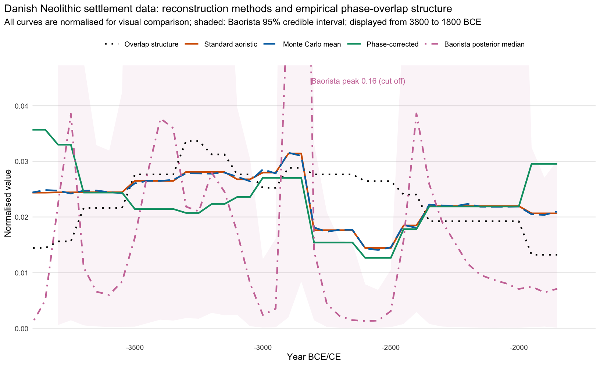
Standard and Monte Carlo overlap almost perfectly (Figure 9). The phase-corrected curve shifts the relative weight of several periods while keeping much of the broad trajectory. The Baorista reference fit, summarised by its posterior median, sits well away from all three and is dominated by the peak at 2900–2801 BCE.
The four curves differ most at chronologically structured transitions, especially around the shared interval boundary at 2800 BCE. These sections are sensitive to the combined effect of reconstruction method and chronological classification and should not be read directly as demographic or settlement-historical events.
In the earlier part of the sequence, the phase-corrected curve tends to be lower where overlap is high, in the later part it does not. An exact correction would leave no relationship with the overlap curve, so a negative local relationship reflects either a real signal that runs against the catalogue or overcompensation. The latter is expected where label use is more concentrated than equal choice assumes, as in these data (Supplement 6), and this comparison alone cannot separate the two.
ggsave("figures/s4_danish_neolithic_methods_vs_overlap.png", p_overlap_methods,
width = 8.5, height = 5.2, dpi = 600)The difference between each normalised reconstruction and the normalised overlap curve shows where along the sequence the reconstructions depart from the catalogue (Figure 10). A reconstruction that only reproduced the catalogue would stay close to zero throughout. Because the Baorista peak is much larger than the other deviations, each panel has its own vertical scale.
p_deviation <- curves_binned |>
filter(year >= plot_time_min, year <= plot_time_max) |>
mutate(overlap_scaled = normalise_curve(overlap)) |>
transmute(year,
`Standard aoristic` = standard - overlap_scaled,
`Monte Carlo mean` = mc_mean - overlap_scaled,
`Phase-corrected` = phase_corrected - overlap_scaled,
`Baorista posterior median` = baorista_median - overlap_scaled) |>
pivot_longer(-year, names_to = "method", values_to = "deviation") |>
mutate(method = factor(method, levels = names(method_colours))) |>
ggplot(aes(x = year, y = deviation, colour = method, linetype = method)) +
geom_hline(yintercept = 0, linewidth = 0.3) +
geom_line(linewidth = 0.8, na.rm = TRUE, show.legend = FALSE) +
facet_wrap(vars(method), ncol = 2, scales = "free_y") +
scale_colour_manual(values = method_colours) +
scale_linetype_manual(values = method_linetypes) +
labs(title = "Danish Neolithic data: deviation of the reconstructions from the overlap structure",
subtitle = "Normalised reconstruction minus normalised overlap curve",
x = "Year BCE/CE", y = "Difference in normalised density") +
plot_theme(base_size = 9)
p_deviation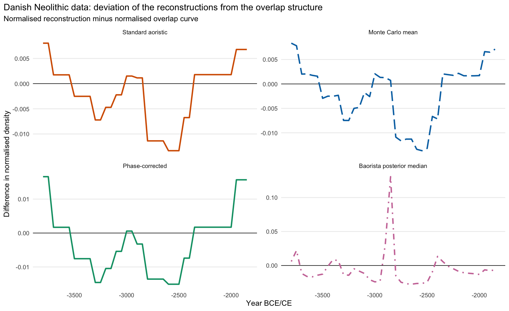
As in Supplement 2, we complement the correlations with the overlap-aligned relative amplitude, \(|\beta| \cdot \mathrm{sd}(\lambda) / \bar R\), with \(\beta\) the slope of the reconstruction on the overlap curve: the change in reconstructed density, as a fraction of the mean density, when the overlap increases by one standard deviation (see Supplement 2). All curves are normalised to the same total, so the values are comparable across methods.
s4_strength <- overlap_diagnostics |>
select(method, overlap_curve_correlation, overlap_relative_amplitude)
amp <- function(m) s4_strength$overlap_relative_amplitude[s4_strength$method == m]For the standard reconstruction, the density rises by about 21% of the mean per standard deviation of overlap, for the phase-corrected reconstruction by about 6%. For the Baorista posterior median, correlation alone is misleading. Its correlation with the overlap curve is lower than that of the standard reconstruction (0.319), but because the curve as a whole varies much more strongly, the component aligned with the overlap structure is larger than for the standard reconstruction (48%).
p_overlap_scatter <- plot_overlap_scatter(
curves = curves_binned,
method_cols = c("standard", "mc_mean", "phase_corrected", "baorista_median"),
method_labels = c(standard = "Standard aoristic",
mc_mean = "Monte Carlo mean",
phase_corrected = "Phase-corrected",
baorista_median = "Baorista posterior median"),
colours = method_colours
) +
labs(title = "Danish Neolithic settlement data: reconstructed density against phase overlap")
p_overlap_scatter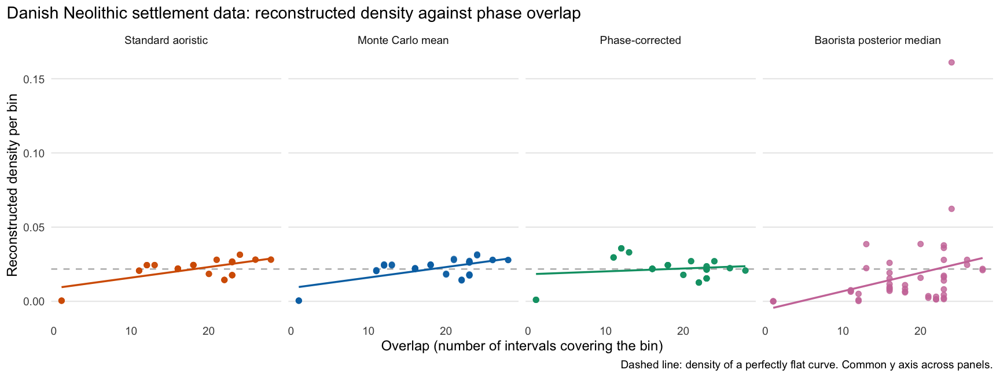
Because there is no known ground truth, we evaluate how strongly the methods differ from one another.
method_matrix <- curves_binned |>
select(standard, mc_mean, phase_corrected, baorista_median)
pairwise_method_correlations <- cor(method_matrix,
use = "pairwise.complete.obs") |>
as.data.frame() |>
rownames_to_column("method_1") |>
pivot_longer(cols = -method_1, names_to = "method_2",
values_to = "correlation") |>
mutate(
method_1 = recode(method_1, standard = "Standard aoristic",
mc_mean = "Monte Carlo mean",
phase_corrected = "Phase-corrected",
baorista_median = "Baorista posterior median"),
method_2 = recode(method_2, standard = "Standard aoristic",
mc_mean = "Monte Carlo mean",
phase_corrected = "Phase-corrected",
baorista_median = "Baorista posterior median")
)
write_csv(pairwise_method_correlations,
"outputs/s4_danish_neolithic_pairwise_method_correlations.csv")pairwise_method_distances <- expand_grid(
method_1 = names(method_matrix), method_2 = names(method_matrix)
) |>
mutate(
rmsd = map2_dbl(method_1, method_2,
~ rmsd(method_matrix[[.x]], method_matrix[[.y]])),
mae = map2_dbl(method_1, method_2,
~ mae(method_matrix[[.x]], method_matrix[[.y]])),
method_1 = recode(method_1, standard = "Standard aoristic",
mc_mean = "Monte Carlo mean",
phase_corrected = "Phase-corrected",
baorista_median = "Baorista posterior median"),
method_2 = recode(method_2, standard = "Standard aoristic",
mc_mean = "Monte Carlo mean",
phase_corrected = "Phase-corrected",
baorista_median = "Baorista posterior median")
)pairwise_labels <- c("Standard aoristic" = "Standard",
"Monte Carlo mean" = "Monte Carlo",
"Phase-corrected" = "Phase-corrected",
"Baorista posterior median" = "Baorista")
pairwise_order <- names(pairwise_labels)
pairwise_table <- matrix("–", nrow = length(pairwise_order),
ncol = length(pairwise_order),
dimnames = list(pairwise_labels, pairwise_labels))
for (i in seq_along(pairwise_order)) {
for (j in seq_along(pairwise_order)) {
if (i > j) {
pairwise_table[i, j] <- formatC(
pairwise_method_correlations$correlation[
pairwise_method_correlations$method_1 == pairwise_order[i] &
pairwise_method_correlations$method_2 == pairwise_order[j]
],
format = "f", digits = 3
)
} else if (i < j) {
pairwise_table[i, j] <- formatC(
1000 * pairwise_method_distances$rmsd[
pairwise_method_distances$method_1 == pairwise_order[i] &
pairwise_method_distances$method_2 == pairwise_order[j]
],
format = "f", digits = 2
)
}
}
}
kbl(pairwise_table, align = "rrrr")| Standard | Monte Carlo | Phase-corrected | Baorista | |
|---|---|---|---|---|
| Standard | – | 0.26 | 4.97 | 23.65 |
| Monte Carlo | 0.999 | – | 4.94 | 23.71 |
| Phase-corrected | 0.786 | 0.788 | – | 25.36 |
| Baorista | 0.424 | 0.417 | 0.200 | – |
The Monte Carlo mean and the standard aoristic result are numerically almost the same curve. The phase-corrected reconstruction stays recognisably related to both, but RMSD shows it moving a substantial amount of probability between periods. Baorista sits 0.024–0.025 RMSD from the aoristic curves, where the three aoristic variants sit within 0.005 of each other. Two defensible inferential frameworks applied to the same interval catalogue thus differ by roughly a factor of 4.8.
As an external comparison, we use settlement-related radiocarbon dates from Denmark available through XRONOS (Roe et al., 2025), retrieved with the xronos R package on 19 June 2026 and included in the repository. Since the empirical aoristic dataset covers Denmark as a whole, the XRONOS comparison is also extracted at the country level.
To reduce the influence of sites with many radiocarbon determinations, the summed calibration is binned by site name, so that each site contributes as one bin.
need_xronos_download <- refresh_xronos || !file.exists(xronos_raw_file)
if (need_xronos_download) {
message("Downloading Danish chronological data from XRONOS...")
chron_dk_raw <- chron_data(country = "DK")
write_csv(chron_dk_raw, xronos_raw_file)
} else {
message("Using cached raw XRONOS data: ", xronos_raw_file)
chron_dk_raw <- read_csv(xronos_raw_file, show_col_types = FALSE)
}Data cleaning is done in multiple steps. First, all radiocarbon dates that are not usable because of missing information are removed. Then the records are filtered for settlement sites, exact duplicates are removed, and duplicate determinations with identical laboratory identifiers are reduced to one.
need_xronos_dedup <- refresh_xronos ||
!file.exists(xronos_dedup_file) ||
!file.exists(xronos_report_file)
if (need_xronos_dedup) {
message("Preparing and deduplicating Danish XRONOS radiocarbon data...")
chron_dk_c14_unfiltered <- chron_dk_raw |>
mutate(bp = as.numeric(bp), std = as.numeric(std),
site_type = as.character(site_type)) |>
filter(!is.na(bp), !is.na(std), std > 0)
chron_dk_c14 <- chron_dk_c14_unfiltered |>
filter(!is.na(site_type),
grepl(xronos_site_type_filter, site_type, ignore.case = TRUE))
chron_dk_c14_exact <- chron_dk_c14 |>
distinct()
chron_dk_c14_dedup <- chron_dk_c14_exact |>
mutate(
dedup_key = case_when(
!is.na(labnr) & labnr != "" ~ paste0("lab:", labnr),
TRUE ~ paste("nolab", bp, std, site, material, species, sep = "|")
)
) |>
arrange(dedup_key) |>
distinct(dedup_key, .keep_all = TRUE)
dedup_report <- tibble(
raw_records = nrow(chron_dk_raw),
usable_c14_records_before_site_type_filter = nrow(chron_dk_c14_unfiltered),
usable_c14_records_after_site_type_filter = nrow(chron_dk_c14),
excluded_by_site_type_filter = nrow(chron_dk_c14_unfiltered) - nrow(chron_dk_c14),
site_type_filter = xronos_site_type_filter,
after_exact_deduplication = nrow(chron_dk_c14_exact),
after_determination_deduplication = nrow(chron_dk_c14_dedup),
removed_exact_duplicates = nrow(chron_dk_c14) - nrow(chron_dk_c14_exact),
removed_determination_duplicates = nrow(chron_dk_c14_exact) - nrow(chron_dk_c14_dedup)
)
write_csv(chron_dk_c14_dedup, xronos_dedup_file)
write_csv(dedup_report, xronos_report_file)
} else {
message("Using cached deduplicated XRONOS data: ", xronos_dedup_file)
chron_dk_c14_dedup <- read_csv(xronos_dedup_file, show_col_types = FALSE)
dedup_report <- read_csv(xronos_report_file, show_col_types = FALSE)
}Of 9,816 Danish records in XRONOS, 4,643 are usable radiocarbon dates from settlement sites. After deduplication, 996 determinations remain (Table 6).
dedup_steps <- tibble(
Step = c("Danish records in XRONOS", "With usable radiocarbon age and error",
"From settlement sites", "After removing exact duplicates",
"After removing duplicate determinations (same laboratory number)"),
Records = c(dedup_report$raw_records,
dedup_report$usable_c14_records_before_site_type_filter,
dedup_report$usable_c14_records_after_site_type_filter,
dedup_report$after_exact_deduplication,
dedup_report$after_determination_deduplication)
) |>
mutate(
Removed = c(NA, -diff(Records)),
Records = format(Records, big.mark = ","),
Removed = ifelse(is.na(Removed), "–", format(Removed, big.mark = ",", trim = TRUE))
)
kbl(dedup_steps, align = "lrr")| Step | Records | Removed |
|---|---|---|
| Danish records in XRONOS | 9,816 | – |
| With usable radiocarbon age and error | 9,810 | 6 |
| From settlement sites | 4,643 | 5,167 |
| After removing exact duplicates | 2,632 | 2,011 |
| After removing duplicate determinations (same laboratory number) | 996 | 1,636 |
The deduplicated radiocarbon data are calibrated using rcarbon (Crema and Bevan, 2021) and IntCal20 (Reimer et al., 2020). Again using rcarbon, we sum the resulting probability distribution, while binning by site name. The summed calibration is generated over a wider window than the aoristic reconstruction to avoid edge effects.
need_xronos_calibration <- refresh_xronos ||
!file.exists(xronos_spd_file) ||
!file.exists(xronos_cal_file) ||
!file.exists(xronos_spd_rds_file)
if (need_xronos_calibration) {
message("Calibrating Danish XRONOS radiocarbon data and building site-binned SPD...")
chron_dk_c14_dedup <- chron_dk_c14_dedup |>
mutate(
site_bin = as.character(site),
site_bin = if_else(is.na(site_bin) | site_bin == "",
paste0("missing_site_", row_number()), site_bin)
)
cal_dk <- calibrate(x = chron_dk_c14_dedup$bp,
errors = chron_dk_c14_dedup$std,
ids = chron_dk_c14_dedup$id,
calCurves = rep("intcal20", nrow(chron_dk_c14_dedup)),
verbose = FALSE)
spd_dk <- spd(cal_dk, bins = chron_dk_c14_dedup$site_bin,
timeRange = xronos_time_range_bp, spdnormalised = FALSE)
spd_df <- tibble(cal_bp = spd_dk$grid$calBP, prd = spd_dk$grid$PrDens) |>
mutate(year = 1950 - cal_bp)
saveRDS(cal_dk, xronos_cal_file)
saveRDS(spd_dk, xronos_spd_rds_file)
write_csv(spd_df, xronos_spd_file)
} else {
message("Using cached Danish XRONOS SPD: ", xronos_spd_file)
spd_df <- read_csv(xronos_spd_file, show_col_types = FALSE)
cal_dk <- readRDS(xronos_cal_file)
spd_dk <- readRDS(xronos_spd_rds_file)
}p_xronos_spd <- ggplot(spd_df, aes(x = year, y = prd)) +
geom_line() +
plot_theme(base_size = 9) +
labs(
title = "Summed calibrated radiocarbon probability: Denmark",
subtitle = "XRONOS settlement dates, deduplicated and binned by site name",
x = "Year BCE/CE",
y = "Summed probability"
)
p_xronos_spd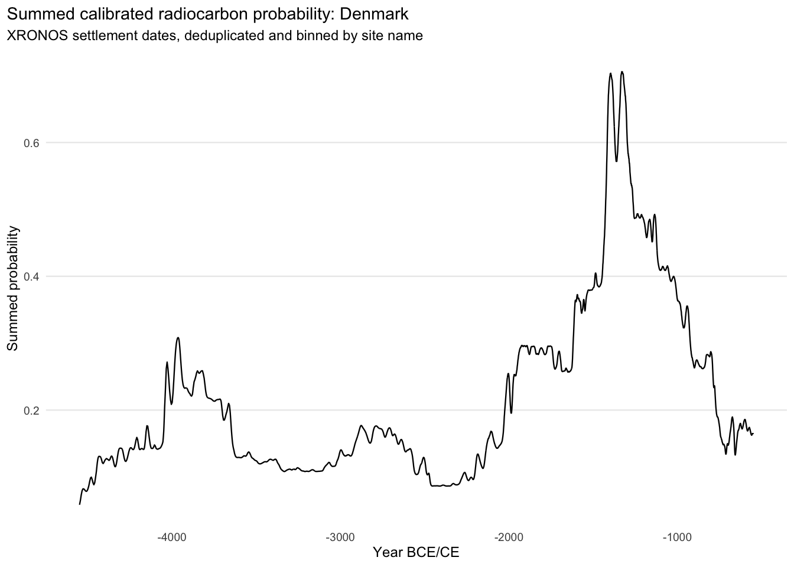
For comparison with the aoristic reconstructions, the summed calibrated radiocarbon curve is binned to the same temporal resolution and normalised to sum to one.
xronos_spd_binned <- spd_df |>
filter(year >= time_min, year < time_max) |>
mutate(year = floor((year - time_min) / bin_width) * bin_width + time_min) |>
group_by(year) |>
summarise(xronos_sumcal = sum(prd, na.rm = TRUE), .groups = "drop") |>
mutate(xronos_sumcal = normalise_curve(xronos_sumcal))curves_with_xronos <- curves_binned |>
left_join(xronos_spd_binned, by = "year") |>
mutate(xronos_sumcal = normalise_curve(replace_na(xronos_sumcal, 0)))
write_csv(curves_with_xronos,
"outputs/s4_danish_neolithic_curves_with_xronos.csv")All correlations with the SPD are computed within the common Neolithic window from 3950 to 1800 BCE. Before 3950 BCE, the most frequent start date of the phase-dated records, the SPD still contains late Mesolithic settlement dates, whereas the phase-dated dataset contains only Neolithic records. Including those bins would compare two different populations. The robustness section below also reports the full analytical window.
xronos_common_min <- -3950L
curves_common <- curves_with_xronos |>
filter(year >= xronos_common_min, year < time_max)
xronos_cor <- function(col) safe_cor(curves_common$xronos_sumcal, curves_common[[col]])Within the common window, the phase-corrected reconstruction correlates positively with the SPD at 0.645, while the standard proportional and Monte Carlo curves are essentially uncorrelated with it, at -0.050 and -0.046. The figure below shows where the curves differ. The phase-corrected curve tracks the summed calibration most closely in the sections where it departs from the standard aoristic result. Whether these correlations exceed what chance would produce is assessed in the robustness section. Baorista shows why coupling to the overlap structure and agreement with the SPD have to be reported separately. Its correlation with the overlap curve (0.319) lies between those of the standard and the phase-corrected reconstruction, but it is practically uncorrelated with the SPD (-0.132).
plot_xronos_comparison <- curves_with_xronos |>
select(year, Standard_aoristic = standard, Monte_Carlo_mean = mc_mean,
Phase_corrected = phase_corrected,
Baorista_posterior_median = baorista_median,
XRONOS_sumcal = xronos_sumcal) |>
pivot_longer(cols = -year, names_to = "method", values_to = "value") |>
mutate(
method = recode(method, Standard_aoristic = "Standard aoristic",
Monte_Carlo_mean = "Monte Carlo mean",
Phase_corrected = "Phase-corrected",
Baorista_posterior_median = "Baorista posterior median",
XRONOS_sumcal = "XRONOS SPD"),
method = factor(
method,
levels = c("Standard aoristic", "Monte Carlo mean", "Phase-corrected",
"Baorista posterior median", "XRONOS SPD")
)
)
xronos_colours <- c(method_colours, "XRONOS SPD" = "black")
xronos_linetypes <- c(method_linetypes, "XRONOS SPD" = "dotted")
p_xronos_comparison <- ggplot(
plot_xronos_comparison,
aes(x = year, y = value, colour = method, linetype = method)
) +
geom_line(linewidth = 0.8, na.rm = TRUE) +
scale_colour_manual(values = xronos_colours, drop = FALSE) +
scale_linetype_manual(values = xronos_linetypes, drop = FALSE) +
coord_cartesian(xlim = c(plot_time_min, plot_time_max), ylim = c(0, y_cut)) +
peak_note(plot_xronos_comparison) +
labs(
title = "Aoristic reconstructions and Danish radiocarbon evidence",
subtitle = paste0(
"All curves are binned and normalised to sum to one; displayed from ",
abs(plot_time_min), " to ", abs(plot_time_max), " BCE"
),
x = "Year BCE/CE",
y = "Normalised intensity"
) +
plot_theme(base_size = 9)
p_xronos_comparison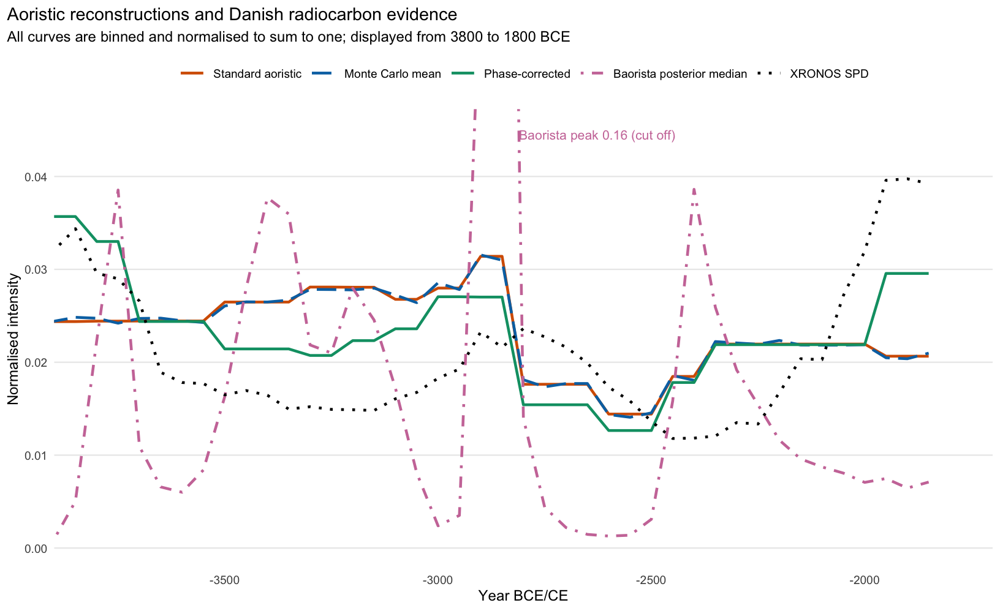
ggsave("figures/s4_danish_neolithic_methods_vs_xronos_sumcal.png",
p_xronos_comparison, width = 8.5, height = 5.2, dpi = 600)xronos_diagnostics <- curves_common |>
select(xronos_sumcal, standard, mc_mean, phase_corrected, baorista_median) |>
summarise(standard = safe_cor(xronos_sumcal, standard),
mc_mean = safe_cor(xronos_sumcal, mc_mean),
phase_corrected = safe_cor(xronos_sumcal, phase_corrected),
baorista_median = safe_cor(xronos_sumcal, baorista_median)) |>
pivot_longer(cols = everything(), names_to = "method",
values_to = "xronos_sumcal_correlation") |>
mutate(
method = recode(method, standard = "Standard aoristic",
mc_mean = "Monte Carlo mean",
phase_corrected = "Phase-corrected",
baorista_median = "Baorista posterior median")
) |>
mutate(window = "Common Neolithic window") |>
arrange(desc(abs(xronos_sumcal_correlation)))
write_csv(xronos_diagnostics,
"outputs/s4_danish_neolithic_xronos_diagnostics.csv")
xronos_diagnostics |>
select(method, xronos_sumcal_correlation) |>
kbl(
digits = 3,
col.names = c("Method", "Correlation with the SPD (common Neolithic window)")
)| Method | Correlation with the SPD (common Neolithic window) |
|---|---|
| Phase-corrected | 0.645 |
| Baorista posterior median | -0.132 |
| Standard aoristic | -0.050 |
| Monte Carlo mean | -0.046 |
Both diagnostics point in the same direction. The phase-corrected result is the least coupled to the overlap structure and the closest to the radiocarbon evidence, although no curve agrees with the SPD beyond chance (see below). The standard reconstruction thus appears to partly reproduce the chronological classification.
The comparison also shows local offsets between the radiocarbon curve and the phase-corrected curve in parts of the sequence. These offsets point to an effect that the overlap diagnostic does not capture. Aoristic assignment is sensitive to the absolute length and placement of phases as well as to their overlap. Phases that are too long, too short, or shifted in calendar time displace probability mass even after the overlap has been corrected.
The correlations above are computed over 43 bins of 50 years. Neighbouring bins are strongly autocorrelated, above all in the SPD, so a conventional significance test would be far too optimistic. We therefore compare the observed correlations with those obtained for surrogate SPDs that keep the power spectrum, and thus the autocorrelation, of the observed SPD but have randomised Fourier phases (Theiler et al., 1992). Since the same surrogates are used for all methods, the test can also be applied to the difference between the correlations of the phase-corrected and the standard reconstruction, which is the actual question of the comparison.
n_surrogates <- 10000L
phase_surrogate <- function(x) {
n <- length(x)
mu <- mean(x)
f <- fft(x - mu)
half <- 2:(floor((n - 1) / 2) + 1)
f[half] <- Mod(f[half]) * exp(1i * runif(length(half), 0, 2 * pi))
f[n + 2 - half] <- Conj(f[half])
Re(fft(f, inverse = TRUE)) / n + mu
}
xronos_methods <- c(standard = "Standard aoristic",
mc_mean = "Monte Carlo mean",
phase_corrected = "Phase-corrected",
baorista_median = "Baorista posterior median")
xronos_windows <- list(
"Common Neolithic window" = c(xronos_common_min, time_max),
"Analytical window" = c(time_min, time_max)
)
set.seed(20261007)
xronos_robustness <- imap_dfr(xronos_windows, function(win, window_name) {
d <- curves_with_xronos |>
filter(year >= win[1], year < win[2])
surrogates <- replicate(n_surrogates, phase_surrogate(d$xronos_sumcal))
per_method <- imap_dfr(xronos_methods, function(label, col) {
r <- safe_cor(d[[col]], d$xronos_sumcal)
null <- apply(surrogates, 2, function(s) safe_cor(d[[col]], s))
tibble(window = window_name, comparison = label, n_bins = nrow(d),
correlation = r,
p_surrogate = (sum(abs(null) >= abs(r)) + 1) / (n_surrogates + 1))
})
diff_obs <- safe_cor(d$phase_corrected, d$xronos_sumcal) -
safe_cor(d$standard, d$xronos_sumcal)
diff_null <- apply(surrogates, 2, function(s) {
safe_cor(d$phase_corrected, s) - safe_cor(d$standard, s)
})
bind_rows(
per_method,
tibble(
window = window_name,
comparison = "Difference: phase-corrected minus standard",
n_bins = nrow(d),
correlation = diff_obs,
p_surrogate = (sum(abs(diff_null) >= abs(diff_obs)) + 1) / (n_surrogates + 1)
)
)
})
write_csv(xronos_robustness,
"outputs/s4_danish_neolithic_xronos_robustness.csv")xronos_robustness |>
filter(window == "Common Neolithic window") |>
transmute(Comparison = comparison, Correlation = round(correlation, 3),
`p (surrogates)` = round(p_surrogate, 3)) |>
kbl()| Comparison | Correlation | p (surrogates) |
|---|---|---|
| Standard aoristic | -0.050 | 0.902 |
| Monte Carlo mean | -0.046 | 0.909 |
| Phase-corrected | 0.645 | 0.115 |
| Baorista posterior median | -0.132 | 0.417 |
| Difference: phase-corrected minus standard | 0.694 | 0.084 |
None of the individual correlations is distinguishable from what an SPD of the same smoothness but random shape would produce (phase-corrected: \(p =\) 0.115, standard: \(p =\) 0.902), which is not surprising for so few effectively independent bins. The difference between the two correlations, 0.694, reaches \(p =\) 0.084 in the common window. Over the full analytical window, which also contains the late Mesolithic part of the SPD, it is 0.494 (\(p =\) 0.027). The result is therefore a comparative one. The correction moves the reconstruction towards the radiocarbon evidence, but neither curve agrees with the SPD on its own.
Without a known truth, the case study shows above all that uncertainty propagation, robustness to the prior and protection against structural bias are different properties of a reconstruction.
Standard and Monte Carlo aoristics share a central tendency because they share the within-interval uniformity assumption. The phase correction changes the relative prominence of several periods. Its much lower correlation with the overlap curve, its smaller overlap-aligned amplitude and the shift towards the XRONOS SPD indicate that the standard reconstruction is partly structured by the intervals, as in the simulations.
For Baorista, the peak at 2900–2801 BCE persists across prior rates from 1 to 100 and is therefore not caused by the smoothing prior. This does not make it archaeological, because all four fits use the same interval catalogue, and the peak falls immediately before the shared boundary at 2800 BCE. The problem thus lies partly in the chronological observations and not only in the reconstruction algorithm.
The local offsets between the phase-corrected curve and the SPD show that overlap is not the only issue. Interval-based reconstructions, aoristic and Bayesian, are sensitive to the absolute duration, placement and repetition of the ranges they are given, so probability can be displaced even after overlap correction when phase definitions are too broad or imperfectly aligned with calendar chronology.
The limits of the comparison are those of any empirical test without ground truth. The case study cannot show that the corrected curve is the true settlement trajectory. The SPD depends on sampling, preservation, research history, calibration, and site-level aggregation, and neither the corrected nor the standard reconstruction agrees with it beyond chance on its own. What holds in both windows is the direction of the shift between them, towards the radiocarbon evidence. Divergence between the curves may therefore reflect biases in the typological chronology, in the radiocarbon sample, or in both.
In this dataset the standard reconstruction is strongly coupled to the overlap structure, and we therefore regard the corrected curve as the better-founded estimate. Where the two differ in parts of the sequence in which the true signal may plausibly be concentrated, both should be reported and the difference discussed. Future probabilistic frameworks may need to model the hierarchical structure, repeated assignment, shared boundaries, and overlap of archaeological phase systems in addition to the uncertainty within each interval.
sessionInfo()R version 4.5.3 (2026-03-11)
Platform: aarch64-apple-darwin20
Running under: macOS 27.2.1
Matrix products: default
BLAS: /Library/Frameworks/R.framework/Versions/4.5-arm64/Resources/lib/libRblas.0.dylib
LAPACK: /Library/Frameworks/R.framework/Versions/4.5-arm64/Resources/lib/libRlapack.dylib; LAPACK version 3.12.1
locale:
[1] en_US.UTF-8/en_US.UTF-8/en_US.UTF-8/C/en_US.UTF-8/en_US.UTF-8
time zone: Europe/Berlin
tzcode source: internal
attached base packages:
[1] stats graphics grDevices datasets utils methods base
other attached packages:
[1] rcarbon_1.5.2 xronos_0.1.1.9000 here_1.0.2 rlang_1.3.0
[5] readr_2.1.6 tibble_3.3.1 purrr_1.2.0 ggplot2_4.0.3
[9] tidyr_1.3.1 dplyr_1.2.1
loaded via a namespace (and not attached):
[1] gtable_0.3.6 xfun_0.54 spatstat.sparse_3.1-0
[4] lattice_0.22-9 aoristAAR_0.1.1 tzdb_0.5.0
[7] Rdpack_2.6.6 vctrs_0.7.3 tools_4.5.3
[10] doSNOW_1.0.20 spatstat.utils_3.2-0 generics_0.1.4
[13] goftest_1.2-3 parallel_4.5.3 proxy_0.4-28
[16] pkgconfig_2.0.3 spatstat_3.5-0 Matrix_1.7-4
[19] KernSmooth_2.23-26 RColorBrewer_1.1-3 S7_0.2.2
[22] lifecycle_1.0.5 compiler_4.5.3 farver_2.1.2
[25] deldir_2.0-4 spatstat.linnet_3.4-0 codetools_0.2-20
[28] spatstat.explore_3.6-0 snow_0.4-4 htmltools_0.5.9
[31] class_7.3-23 yaml_2.3.12 crayon_1.5.3
[34] pillar_1.11.1 spatstat.model_3.5-0 classInt_0.4-11
[37] spatstat.univar_3.1-5 iterators_1.0.14 rpart_4.1.24
[40] abind_1.4-8 foreach_1.5.2 nlme_3.1-168
[43] spatstat.geom_3.6-1 tidyselect_1.2.1 digest_0.6.39
[46] sf_1.0-23 labeling_0.4.3 splines_4.5.3
[49] polyclip_1.10-7 rprojroot_2.1.1 fastmap_1.2.0
[52] grid_4.5.3 cli_3.6.6 magrittr_2.0.5
[55] e1071_1.7-16 spatstat.data_3.1-9 withr_3.0.3
[58] tensor_1.5.1 scales_1.4.0 bit64_4.6.0-1
[61] rmarkdown_2.30 bit_4.6.0 hms_1.1.4
[64] evaluate_1.0.5 knitr_1.50 rbibutils_2.4.1
[67] mgcv_1.9-4 Rcpp_1.1.0 spatstat.random_3.4-3
[70] glue_1.8.1 DBI_1.2.3 renv_1.2.0
[73] vroom_1.6.7 jsonlite_2.0.0 R6_2.6.1
[76] units_1.0-0